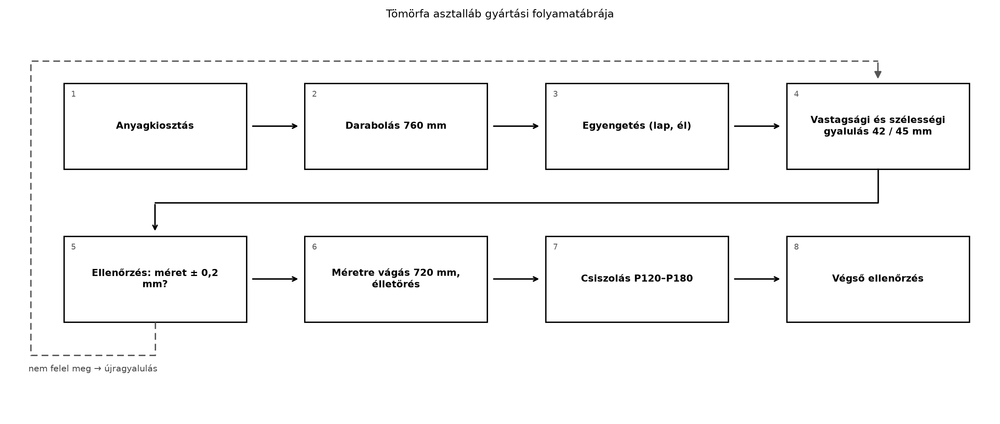

Egy asztalosműhelyben a rajz önmagában még nem mondja meg, hogyan készül el a termék. A rajz megadja a méreteket, az anyagot és a szerkezetet, de nem írja le, melyik géppel kezdj a munkának, milyen sorrendben munkáld meg az alkatrészt, milyen beállítást használj, és mit ellenőrizz közben. Ha ezt minden alkalommal fejből találod ki, a termék minősége attól függ, ki dolgozik és milyen napja van. Ezért a műhelyben nemcsak rajzra, hanem műszaki leírásra, művelettervre és gyártási folyamatábrára is szükség van.
Ebben az alfejezetben megtanulod, hogyan készíts egy tömörfa alkatrészhez – például egy asztallábhoz – olyan dokumentumot, amelyből egy másik asztalos is ugyanazt az eredményt tudja előállítani.
Képzeld el, hogy a műhelyben egy 720 mm hosszú, 45 × 42 mm keresztmetszetű tölgyfa asztallábat kell gyártanod, 10 darabot. A rajz pontosan mutatja a kész méretet, az anyagot és a felületi követelményt. A műveletterv megmondja, hogyan juss el a fűrészárutól a kész lábig: anyagkiosztás, darabolás, egyengetés, vastagsági gyalulás, méretre vágás, élletörés, csiszolás, végső ellenőrzés. A gyártási folyamatábra pedig egyetlen pillantással mutatja az egész utat, az ellenőrzési pontokkal együtt.
Definíció. A műszaki leírás az a dokumentum, amely rögzíti, hogy milyen terméket kell előállítani: rendeltetés, anyagok, szerkezet, méretek, felületkezelés, vasalatok, beépítési és használati követelmények. Ez a „mit gyártunk” kérdésre válaszol.
Definíció. A műveletterv az a műhelyi dokumentum, amely egy alkatrész vagy termék gyártásához szükséges műveleteket sorolja fel a végrehajtás sorrendjében. Minden művelethez megadja a gépet vagy szerszámot, a beállítási adatot, az ellenőrzési módot és sokszor az időnormát is. Ez a „hogyan gyártjuk” kérdésre válaszol.
Definíció. A technológiai leírás a teljes gyártási eljárás részletes szabályozása: anyagelőkészítés, megmunkálási paraméterek, ragasztási és felületkezelési előírások, páratartalom- és hőmérséklet-követelmények, minőségi határértékek. A műveletterv ennek a leírásnak a termékre konkrétan alkalmazott, darabra lebontott változata.
Definíció. A gyártási folyamatábra a gyártási lépések, ellenőrzések és anyagáramlások grafikus ábrázolása. Jelölései: téglalap a művelet, rombusz az ellenőrzés vagy döntés, ovális a folyamat eleje és vége. A folyamatábránál a nyilak mutatják a haladás irányát.
A könyvben a technológiai lap egy gyakorlati recept: egyetlen műveletre vagy kis műveletcsoportra bontva közli az anyagokat, gépeket, biztonsági előírásokat, lépéseket és ellenőrzési pontokat. A műveletterv a teljes termék műveletsora, a technológiai lap pedig egy-egy művelet kiemelt, biztonsági szempontból is kidolgozott változata.
Továbbvitt eredmény. A műveletterv és a technológiai lap formáját használjuk a Minőségbiztosítás, gyártásközi ellenőrzés és kísérő dokumentáció, a Irodai szoftverek az asztalos munkájában és a A gyártási folyamat megtervezése: műveletterv, gépválasztás, időnorma, ütemezés alfejezetekben. Ha itt jól megtanulod a szerkezetét, ott már csak a mélységet kell növelned.
A műszaki leírás a vevő, a rajzoló és a műhely közös nyelve. Egy egyszerű tölgyfa asztalhoz például az alábbi táblázat szerint készülhet:
| Rész | Tartalom (példa) |
|---|---|
| Termék megnevezése | Tölgyfa dohányzóasztal |
| Fő méretek | 1200 × 600 × 450 mm |
| Anyag | tömör tölgy, 8–10 % fanedvesség, gőzölt felület (tájékoztató, ellenőrizendő) |
| Szerkezet | kávás asztallap, négy láb, csapos kötéssel |
| Felületkezelés | olaj, 2 réteg, gyártói adatlap szerint |
| Vasalatok | 4 db asztalláb-rögzítő csavaros kötőelem (ellenőrizendő: gyártói adat) |
| Használati utasítás | beltéri használatra, max. relatív páratartalom 60 % (tájékoztató) |
| Karbantartás | száraz törlés, évente olajos ápolás, leírás szerint |
Szabály. A műszaki leírás mindig a rajzzal és a szabásjegyzékkel együtt érvényes. Ha a rajz és a műszaki leírás ellentmond, azt a gyártás megkezdése előtt tisztázni kell.
A használati és karbantartási utasítás az ügyfélnek szóló rész. Egy beépített szekrénynél például rögzíteni kell, hogy a fafelületet ne érje tartósan víz, a vasalatokat időnként ellenőrizni kell, és a fényérzékeny fánál a napsugárzás színváltozást okozhat.
A műveletterv készítése egyszerű recept szerint történik. Nem kell bonyolult szoftver; egy táblázat vagy akár egy füzet is megfelel.
Recept – műveletterv készítése alkatrészhez
Megjegyzés. A művelettervben szereplő időnormák mindig tájékoztató jellegűek, hacsak nincs cégen belüli mért norma. A gépek beállítási értékeit a gépkönyv és a gyártói adatlap szerint kell ellenőrizni.
A gyártási folyamatábra akkor hasznos, ha a műhely vezetője vagy a vizsgabiztos egyszerre látja az egész termék útját. Az alábbi diagram egy tömörfa asztalláb gyártási folyamatát mutatja:

A folyamatábrán minden téglalap egy-egy műveletet jelöl, a nyilak mutatják, mi következik egymás után. Ez a rajzoló nem rajzol rombuszt, ezért az ellenőrzési pontot (5. lépés) a felirata jelzi, a szaggatott visszacsatoló nyíl pedig a „nem felel meg → újragyalulás” utat mutatja. Ha ellenőrzési pontot akarsz jelölni, rombuszt vagy aláhúzott téglalapot használj; a példában a végső ellenőrzés külön műveletként szerepel, mert önálló időt és figyelmet igényel.
A folyamatábrát nem kell rajzszerűen tökéletesen megszerkeszteni: a lényeg, hogy a műveletek sorrendje, a döntési pontok és a visszacsatolások egyértelműek legyenek. Egy bonyolultabb terméknél a „nem felel meg → vissza vastagsági gyalulásra” visszacsatolás is ábrázolható.
Adott:
Műveletterv táblázat:
| Művelet sorszáma | Művelet megnevezése | Gép / szerszám | Beállítás, készülék (tájékoztató) | Ellenőrzés | Időnorma (min/db) |
|---|---|---|---|---|---|
| 10 | Anyagkiosztás, hibakiejtés | kézi, mérőszalag, tolómérő | szálirány szerint | nincs repedés, laza göcs, elszíneződés | 1,5 |
| 20 | Darabolás 760 mm-re | asztalos körfűrészgép, keresztvágó ütköző | ütköző 760 mm, hasítóék, elszívás bekapcsolva | hossz 760 ± 1 mm, derékszög | 0,8 |
| 30 | Egyengető gyalulás: bázislap, bázisél | egyengető gyalugép | fogásmélység legfeljebb 2 mm, védőburkolat | lap sík, él derékszög 0,3 mm / 500 mm | 2,0 |
| 40 | Vastagsági gyalulás 42 mm-re | vastagsági gyalugép | asztalmagasság 42 mm, fogásmélység 1 mm | vastagság 42 ± 0,2 mm | 1,5 |
| 50 | Szélességre gyalulás 45 mm-re (a bázisél az asztalon) | vastagsági gyalugép | asztalmagasság 45 mm, fogásmélység 1,5 mm | szélesség 45 ± 0,2 mm, derékszög | 1,2 |
| 60 | Méretre vágás 720 mm-re, élletörés | asztalos körfűrészgép, kézi élgyalu | ütköző 720 mm, élletörés 2 × 45° (tájékoztató) | hossz 720 ± 0,5 mm, letörés egyenletes | 1,0 |
| 70 | Csiszolás P120, majd P180 | kézi excentercsiszoló, elszívás | finom csiszolás | felület sima, élek nem gömbölyödnek | 2,5 |
| 80 | Végső ellenőrzés, jelölés | mérőeszközök, ceruza | rajz szerinti méretek | nincs sérülés, darabszám 10 db | 1,0 |
Számítás – időnorma és napi kapacitás.
A táblázat időnormáinak összege:
Ez a műveleti idő. A valós műhelyben szünet, anyagmozgatás, gépbeállítás és várakozás is van. Ha a veszteségidőt 15 %-ra becsüljük, a tényleges darabidő:
Ha egy munkanapban 450 perc hatékony idővel számolunk (7,5 óra), az elméleti darabszám:
Ellenőrzés: 33 db × 13,5 min/db = 445,5 min, ami belefér a 450 percbe. Ez tájékoztató kapacitásszámítás; a tényleges érték a műhely felszereltségétől és a dolgozó gyakorlatától függően eltérhet.
A műveletterv csak akkor érthető, ha a rajz pontos. Az alábbi ábraigény egy olyan alkatrészrajzot ír le, amely a művelettervhez tartozik.
A keresztmetszet az oldalnézetben látszik; a felülnézeten a 45 mm-es szélesség. A HTML-változatban a műveletterv egy sorára mutatva kiemelődik az a felület vagy méret, amelyet az adott művelet állít elő.
A műveletterv minden műveletéhez tartozik ellenőrzés. Az ellenőrzés nem a gyártás végén kezdődik, hanem minden lépés után.
Ellenőrzési pontok a műveletterv alapján:
Ha a méret eltér a tűréshatártól, a darabot vissza kell vezetni a megfelelő művelethez, vagy ha már nem javítható, selejtről kell döntést hozni.
Hiba. A műveletterv kihagyja az egyengetést, és
közvetlenül vastagsági gyalura küldi a darabot.
Ok: a műveletterv készítője nem gondol a bázislap
hiányára.
Helyes gyakorlat: előbb mindig egyengető gyalun készíts
bázislapot és bázisélt, csak utána vastagsági gyaluval méretezz.
Hiba. A művelettervben a csiszolás a méretre vágás
előtt szerepel.
Ok: a sorrendet csak időben írták fel, nem
technológiailag.
Helyes gyakorlat: a méretre munkálás és az élletörés
előzze meg a végső csiszolást, mert a gépi vágás és gyalulás megsértheti
a csiszolt felületet.
Hiba. A műveletterv nem tartalmaz ellenőrzési
pontokat, csak gépeket.
Ok: a készítő dokumentumot akart rövidíteni, de ezzel a
gyártás közbeni hibák nem derülnek ki időben.
Helyes gyakorlat: minden művelet után legyen konkrét,
mérhető ellenőrzés.
Egy asztalosműhelyben a tanuló egy 600 mm hosszú, 40 × 40 mm-es tölgyfa asztallábat kapott azzal az utasítással: „csináld meg úgy, mint a múltkor”. A rajz rendelkezésre állt, de műveletterv nem. A tanuló emlékezetből előbb vastagsági gyalult, majd egyengetett. A vastagsági gyalu a görbe darabot görbén hagyta; az egyengetés után a láb a kész méretnél vékonyabb lett, és nem lett egyenes, mert a bázislap nem volt sík. A lábat végül újra kellett készíteni.
A tanulság: a műveletterv nem felesleges papírmunka, hanem a gyártás megbízhatóságát biztosítja. Ha megvan a műveletsor, a kevésbé gyakorlott dolgozó is következetesen jó alkatrészt készít, és a hiba okát is könnyebb megtalálni.
1. feladat (A)
Definiáld a művelettervet, és írd le, mi a szerepe a műhelyben.
2. feladat (A)
Sorold fel a műszaki leírás legalább hat tartalmi elemét, és
mindegyikhez írj egy-egy példát egy tölgyfa dohányzóasztalra.
3. feladat (B)
Készíts művelettervet egy 500 × 200 × 20 mm-es tölgyfa polclaphoz, ahol
a nyers méret 520 × 210 × 25 mm. Legalább öt műveletet adj meg, géppel,
ellenőrzéssel.
4. feladat (B)
Olvasd le a fenti gyártási folyamatábráról: hány műveleti lépés van, és
melyik művelet után következik a végső ellenőrzés?
5. feladat (C)
Egy asztalos összevonja a darabolást és a méretre vágást, mert „úgy
gyorsabb”: a nyers fűrészárut rögtön 720 mm-re vágja, ráhagyás nélkül,
és utána gyalul. Magyarázd el, miért lehet ez kockázatos, és mi a helyes
sorrend.
6. feladat (D)
Tervezd meg egy 1200 × 600 mm-es forgácslap élzárásának művelettervét és
becsült időnormáját. A lap négy oldalát élzáróval kell ellátni, majd az
éleket leélezni. Vegyél fel reális műveleti időket (tájékoztató),
számold ki a tényleges darabidőt 10 % veszteséggel, és becsüld meg, hány
lap készülhet el egy 450 perces munkanapon.
Önellenőrzés – válaszok
Feladatok megoldása
1. feladat (A)
A műveletterv olyan dokumentum, amely egy alkatrész vagy termék
gyártásához szükséges műveleteket sorolja fel a végrehajtás
sorrendjében, és minden művelethez gépet, szerszámot, beállítást,
ellenőrzést és időnormát rendel. Szerepe, hogy a gyártás megismételhető,
ellenőrizhető legyen, és ne függjön a dolgozó emlékezetétől.
2. feladat (A)
Lehetséges elemek: termék megnevezése (dohányzóasztal), fő méretek (1200
× 600 × 450 mm), anyag (tömör tölgy), szerkezet (kávás, lábak csapos
kötéssel), felületkezelés (olaj, 2 réteg), vasalatok (4 db
rögzítőcsavar), használati utasítás (beltéri, max. 60 % relatív
páratartalom), karbantartás (száraz törlés, évente olajozás).
3. feladat (B)
Példa műveletterv polclaphoz:
| Művelet | Gép / szerszám | Ellenőrzés |
|---|---|---|
| Anyagkiosztás, hibakiejtés | kézi | nincs élcsorbulás, vetemedés |
| Darabolás 520 × 210 mm-re | asztalos körfűrészgép | méret 520 ± 1 mm, 210 ± 1 mm |
| Egyengető gyalulás bázislap, bázisél | egyengető gyalugép | lap sík, él derékszög |
| Vastagsági gyalulás 20 mm-re | vastagsági gyalugép | 20 ± 0,2 mm |
| Szélességre hasítás 200 mm-re (a bázisél a párhuzamvezetőn, hasítóékkel) | asztalos körfűrészgép | 200 ± 0,5 mm, párhuzamos |
| Méretre vágás 500 mm-re | asztalos körfűrészgép, hosszütköző | 500 ± 0,5 mm, derékszög |
| Csiszolás P120–P180 | excentercsiszoló | felület sima |
4. feladat (B)
A folyamatábrán nyolc lépés van: anyagkiosztás, darabolás, egyengetés,
vastagsági és szélességi gyalulás, ellenőrzés, méretre vágás és
élletörés, csiszolás, végső ellenőrzés – ebből hat gyártási művelet és
két ellenőrzési pont. A végső ellenőrzés (8. lépés) a csiszolás után
következik.
5. feladat (C)
Ha a fűrészárut rögtön kész méretre vágják, nincs ráhagyás a gyalulásra.
Az egyengető és vastagsági gyalulás anyagot vesz le, így a végleges
méret kisebb lesz a rajznál. Ezen kívül a nyers fűrészáru vetemedése
miatt a bázislap kialakítása előtt nem lehet pontosan méretre vágni.
Helyes sorrend: darabolás ráhagyással (760 mm), egyengetés, vastagsági
gyalulás, majd méretre vágás 720 mm-re.
6. feladat (D)
Példa műveletterv és időnorma:
| Művelet | Idő (min/db) |
|---|---|
| Lap ellenőrzése, élek portalanítása | 0,5 |
| Élzárás felvasalása vagy felhelyezése | 3,0 |
| Leélezés, élek simítása | 2,5 |
| Végső ellenőrzés | 0,5 |
| Összes műveleti idő | 6,5 |
Veszteség: 10 %, tehát
.
Napi darabszám:
.
Ez tájékoztató érték; az élzáró gép sebessége és a gyakorlat jelentősen
módosítja.
A műszaki leírás rögzíti, milyen terméket kell gyártani: anyagok, szerkezet, méretek, felületkezelés, vasalatok, használati és karbantartási utasítás. A műveletterv a gyártás műveleteit sorolja fel sorrendben, géppel, szerszámmal, beállítással, ellenőrzéssel és időnormával. A technológiai leírás a teljes eljárás általános szabályait adja, a technológiai lap pedig egy-egy műveletre lebontott, biztonsági előírásokkal ellátott gyakorlati recept. A gyártási folyamatábra a műveletek sorrendjét és az ellenőrzési pontokat grafikusan mutatja. A műveletterv készítésekor a rajzról indulunk, meghatározzuk a nyers méretet, majd a bázislap és bázisél kialakítása után haladunk a méretre munkálás és a felületi műveletek felé. A csiszolás mindig a gyalulás után következik. Az időnorma számításánál a műveleti időt a veszteségidővel növeljük, így kapjuk a tényleges darabidőt. A művelettervet a minőségbiztosításban, a számítógépes gyártástervezésben és a vizsgaremek dokumentációjában is használjuk.
Felhasznált forrástípusok: szakkönyvi műhelygyakorlat; minőségirányítási dokumentációs alapelvek (MSZ EN ISO 9001 – ellenőrizendő a hatályos kiadás); a könyv korábbi alfejezete, különösen a Szabásjegyzék és anyagnorma.
Ellenőrizendő pontok: a megadott időnormák, fogásmélységek, ütközőméretek és tűrések tájékoztató jellegűek, műhelyenként és géptípusonként eltérhetnek; a műszaki leíráshoz tartozó anyagjellemzők (például fanedvesség, relatív páratartalom) és a vasalatok gyártói adatai a termék dokumentációjából ellenőrizendők.